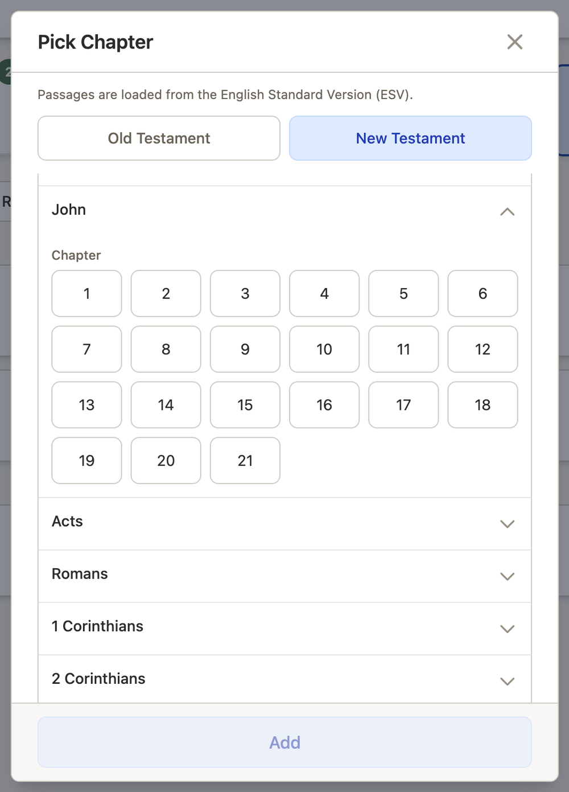
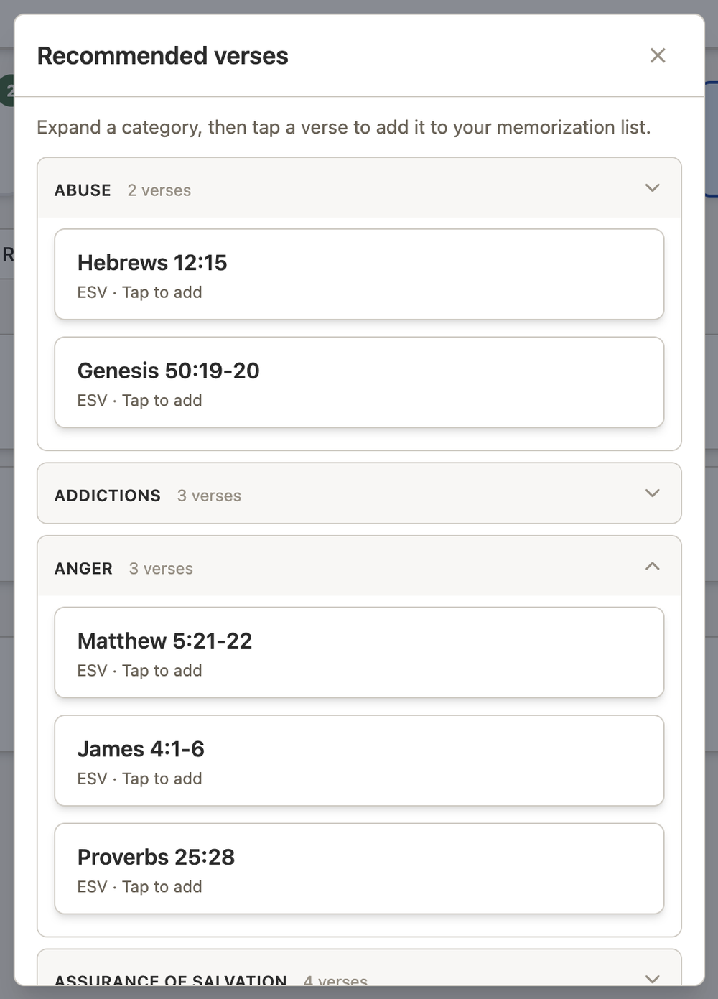
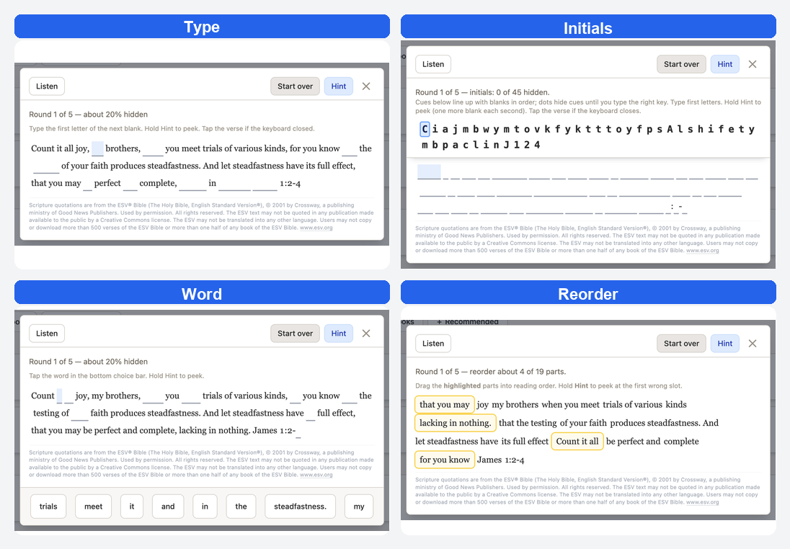

|
Message from your prayer ministry |
|
Friends, We’re excited to share a new feature in the Cross Pointe Prayer App: Memorize Scripture. Memorize is your private place to learn Bible passages (ESV), practice with guided games, listen to the text read aloud, and track progress from Learning → Practicing → Mastered. It sits right on Home next to Current, Answered, Prompts, and Personal. How to find Memorize

Add passages three waysFrom the Memorize action bar you can:

Add Verses opens the Bible picker. Choose Old or New Testament, a book, then a chapter and verse range. Passages load from the English Standard Version (ESV).  Recommended verses by topic+ Recommended opens counseling-friendly topic categories (Anger, Fear, Marriage, Worry, and many more). Expand a category, then tap a verse to add it. Verses already on your list show as Already added. On desktop, hover a verse card to preview the text; on mobile, long-press. Tap still adds the verse (or opens practice on your list).  Your list and mastery groups
Each card shows the reference, last practiced date, and session count. Tap a card to practice; use the trash icon to remove (you can always add it again later). 
Practice modes and ListenTap a passage to open practice. You’ll see the full text, with an optional Listen button (ESV audio with speed controls), and a five-round difficulty path (Round 1 is easiest). Tap Start practice and choose a mode:
 Need a guided walkthrough?In the app, tap ? (Help) → Memorize Scripture → Start guided tour. We’re grateful to walk with you as you hide God’s Word in your heart. — Cross Pointe Prayer Ministry Scripture quotations are from the ESV® Bible (The Holy Bible, English Standard Version®), © 2001 by Crossway, a publishing ministry of Good News Publishers. Used by permission. All rights reserved. |